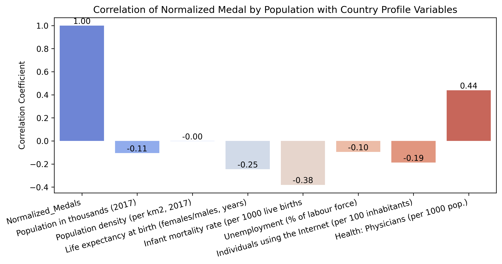
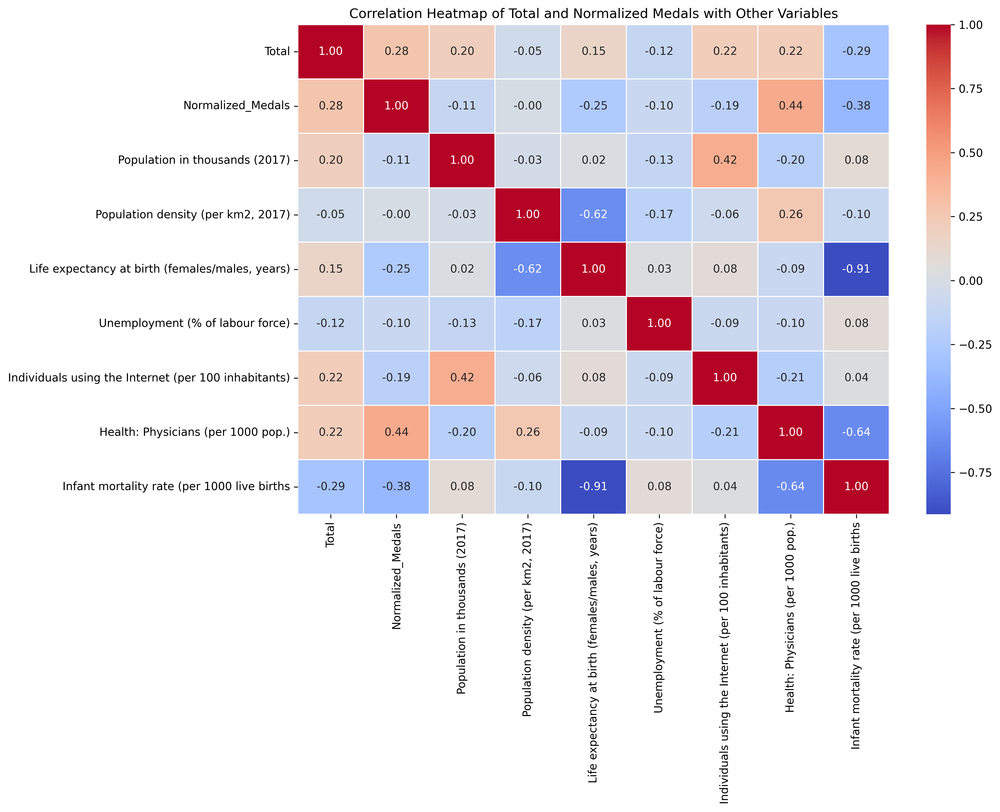

The analysis suggests a correlation between a nation's wealth and its Olympic success, as indicated by a positive trend where higher GDP per capita often aligns with increased normalized medal counts. This pattern implies that affluence may enable better sports investment, fostering an environment conducive to Olympic achievement. Despite the overall trend, the presence of outliers signals that wealth is not an absolute predictor of Olympic performance. Countries with substantial economic resources sometimes underperform in medal terms, while less affluent nations occasionally surpass expectations, underscoring the multifaceted nature of Olympic success. Factors such as cultural sports affinity, governmental sports investment, and the availability of quality training and coaching are evidently significant. Furthermore, the varied positions of countries with substantial total medal hauls on the plot relative to their GDP per capita highlight the potential influence of a strong Olympic legacy and commitment to sports, beyond mere economic capacity. This complexity reflects the intricate interplay of economic, cultural, and institutional elements in shaping Olympic outcomes.
The visualization presents a compelling analysis of the correlation between total Olympic medals and various country profile variables. Firstly, the strong positive correlation coefficient of 1.00 for the total population suggests that a larger population size may offer a broader talent pool, potentially leading to a higher medal count. However, the data also indicates that factors such as population density and infant mortality rate have less impact on Olympic success, as evidenced by their lower correlation coefficients of 0.20 and -0.05, respectively.
Interestingly, variables related to a country's healthcare infrastructure, such as the number of physicians per 1000 population, show a moderate positive correlation of 0.22, implying that better healthcare systems might contribute to improved athlete performance and, consequently, Olympic success. This could reflect the importance of athlete health and wellness in achieving peak performance.
Lastly, a negative correlation coefficient of -0.29 with unemployment suggests that countries with lower unemployment rates, which may also indicate better economic conditions, tend to achieve greater success in the Olympics. This may be due to the availability of more resources to invest in sports development and athlete training.
Overall, these insights highlight that while a larger population can be advantageous in the quest for Olympic medals, a combination of economic health, investment in healthcare, and other socio-economic factors play a significant role in shaping a country's Olympic outcomes.
Correlation of Normalized Medal by Population with Country Profile Variables

The bar graph depicting the correlation of normalized medals by population with various country profile variables delivers several notable insights. The perfect correlation coefficient of 1.00 for normalized medals unequivocally affirms the data's normalization against population, emphasizing that the metric is indeed adjusted to account for country size.
Interestingly, the negative correlation coefficients with population density and infant mortality rate, at -0.11 and -0.38 respectively, suggest that these factors inversely affect Olympic success when medals are adjusted for population size. This could imply that countries with lower population densities and better health outcomes, which often correlate with higher quality of life, might be better positioned to support athletes' development and Olympic preparation.
On the flip side, the correlation of 0.44 with the number of physicians per 1000 population stands out, potentially indicating that countries with better healthcare infrastructure and thus healthier populations might also have an edge in nurturing Olympic-level talent. However, it's noteworthy that factors such as unemployment and internet usage show negative or negligible correlations, suggesting that these aspects of socioeconomic status do not directly relate to normalized Olympic success. This highlights the multifaceted nature of Olympic achievement and hints at the complex interplay between an array of social, economic, and health-related factors and a nation's ability to perform on the highest sporting stage.
Correlation Heatmap of Total and Normalized Medals with Other Variables

Here is an additional visualization to show correlations between extra country profile variables for those who are curious.